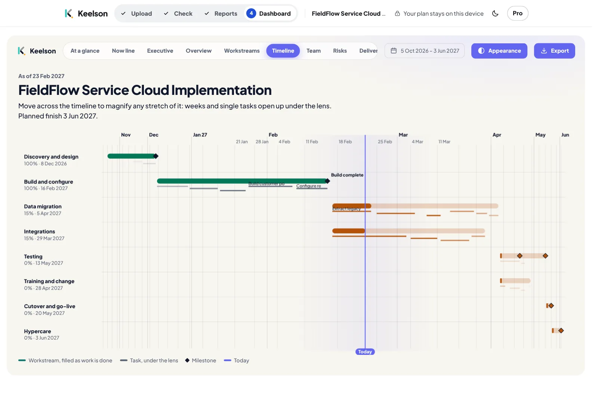
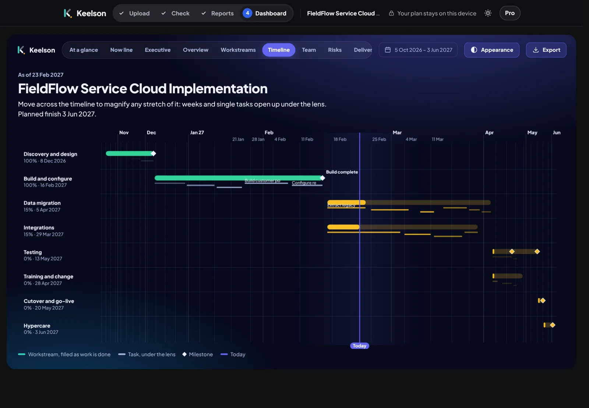
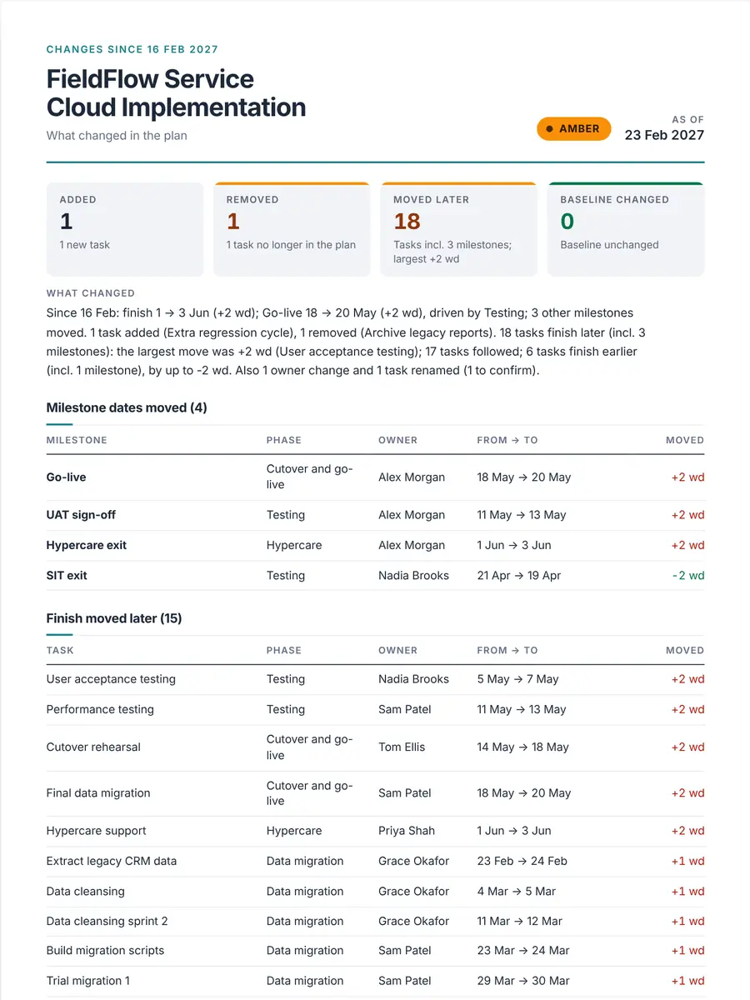
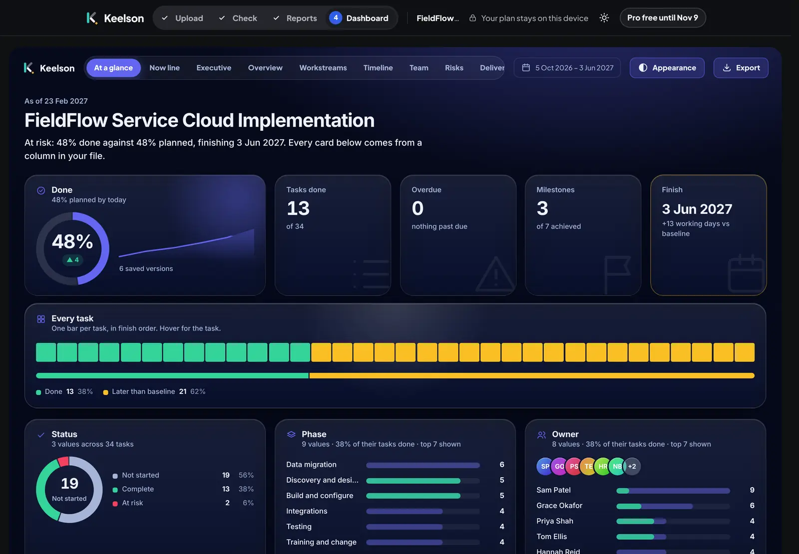
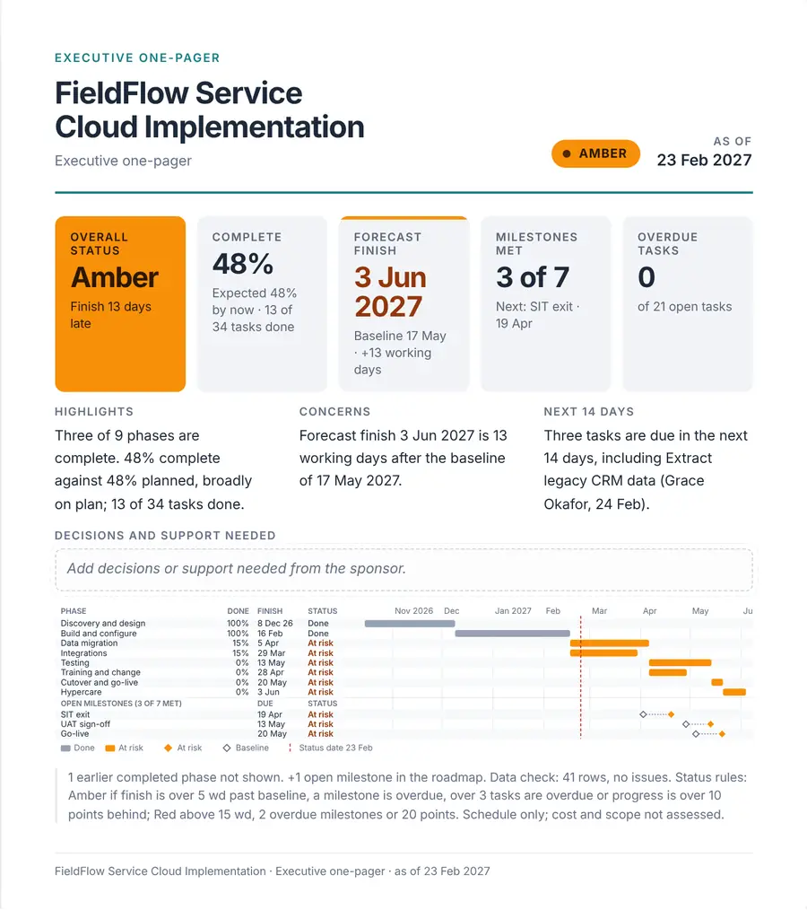
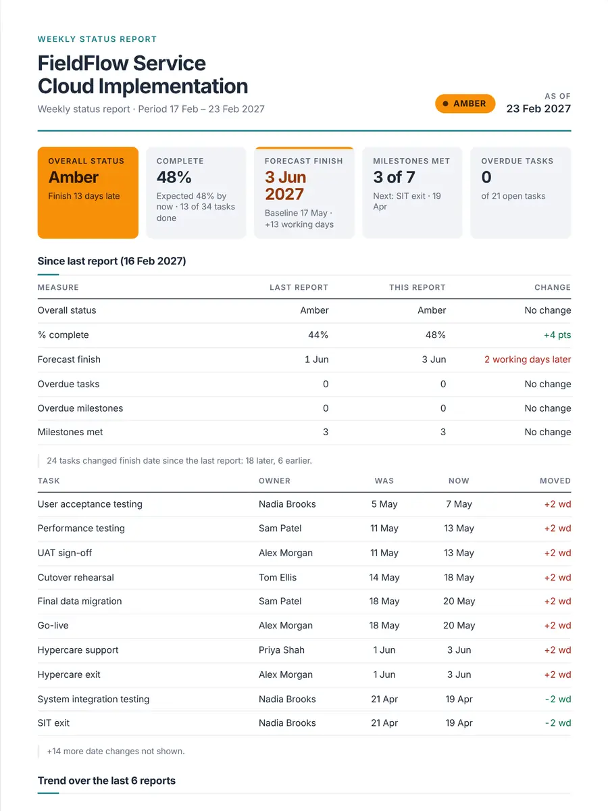
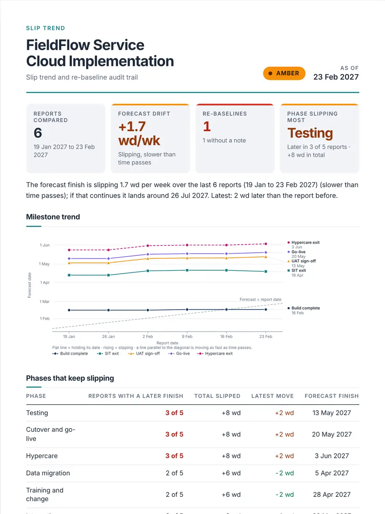
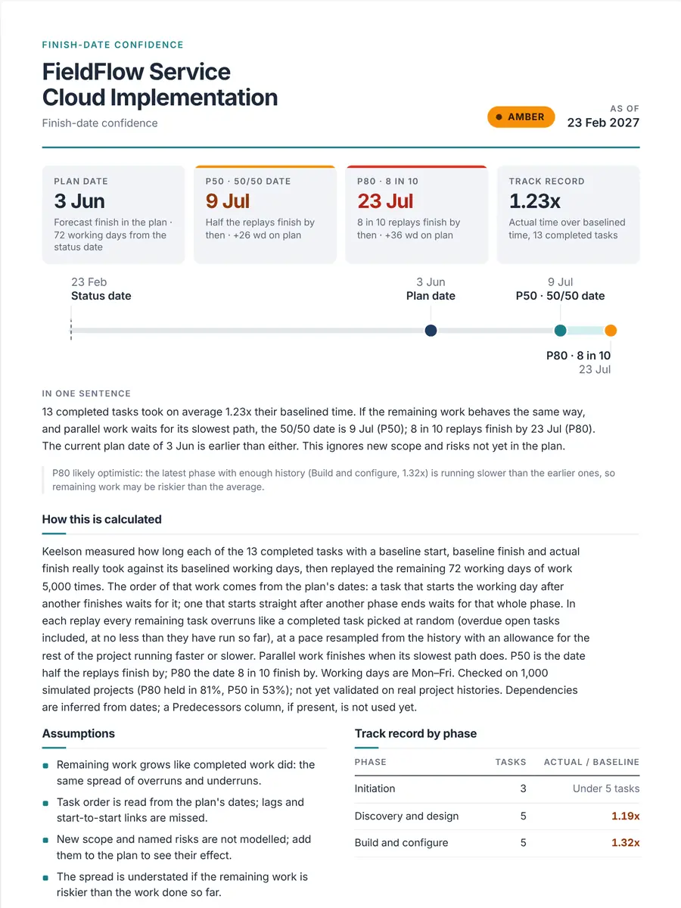

Free
Try it on your real plan
$0forever
Start free
- Quick check and plan health check of any plan
- Preview all 7 reports · one-pager as PDF
- Free Excel dashboard download
- Free PM tools
Upload the plan export you already have, from MS Project, Jira, Smartsheet or Excel. Get your client’s weekly status report: what changed, what’s late, when it will finish.
Free to start · No sign-up · Your plan never leaves your browser


Works with exports from
Reads .xlsx, .csv and .tsv files or a pasted table. From MS Project, save as .xlsx or CSV first. Tested on five real-world plan shapes.2 Product names are trademarks of their owners. Keelson is not affiliated with or endorsed by them.
Exports from 12 tools, messy or not: header typos, Total rows, merged cells, French, German, Spanish and Portuguese headers.
It finds the task, finish, owner and progress columns and shows you what it understood before it reports anything.
One-pager, weekly status, forecast or a steering-committee deck, as PDF, Word or PowerPoint.
Answered from your plan, every week, in the same format.
Moved, added and removed, matched week to week.

Slip across your saved weeks.
A date range from your own pace. How it works
Typos, Total rows, merged cells, six languages. Tested on 621,858 damaged plans.3
With your logo.
Problems counted, rows named. Free. Try it
Who to ask, as a message ready to paste. Pro.
Meeting notes become a tracked log. No AI. Pro.
Eleven screens from the same plan. See the Dashboard

Client plans are confidential. Keelson reads the file on your computer and builds the report there. There is nothing to upload and nothing stored on a server.
Real pages from the fictional FieldFlow sample. Preview every one free.




See a real report (PDF, fictional sample) One-pagerWhat changedFinish forecast
Try it on your real plan
$0forever
Start free
For the status report you send every week
$8/ month
billed yearly ($96)
Your plan never leaves your browser.
Join the Pro waitlistInvoice for expense claims · Cancel any time · 14-day refund
Running a PMO or practice? Team plan coming — join the waitlist
Prices in USD. Pro isn't on sale yet; the waitlist button opens an email to us. When checkout opens, Lemon Squeezy, our merchant of record, will handle payment, tax, VAT and invoices.
Prices in USD. Checkout is on Lemon Squeezy, our merchant of record, which handles payment, tax, VAT, receipts and invoices. Your Pro licence key arrives in the receipt email.
More on slip trend, client templates, wording, PMBOK and PRINCE2
No. The page reads your plan inside your browser tab. There is no server to send it to. Load the page, turn off Wi-Fi, and it still works. The quick check saves nothing: close the tab and it is gone.
In your browser's own storage on this device. A version is saved when you download a Word or PowerPoint report or press Save version: one per report date, up to 52 per project. You can export it as a .keelson.json file and import it on another machine; anyone you give that file to can read the plan in it. Nothing is sent to us. Clearing this site's data in your browser removes it.
Only a Pro licence key, checked with our reseller when you enter it and about once a week after. No plan data is included. This website itself makes no network requests after it loads: no cookies, no analytics, no third-party scripts or fonts. Loading the pages does reach our host, GitHub Pages, which sees your IP address and browser type like any web host (details).
By ID first (Unique ID from MS Project, Issue key from Jira, or an ID column), then by phase and name. Close name matches within a phase are shown as “probable rename” for you to confirm or split. Column order and date format can differ between the two files.
From your own completed tasks: how long each took against its baselined duration. Keelson replays the remaining work thousands of times, each time drawing task durations from that track record, and parallel work waits for its slowest path. The P50 is the 50/50 date; the P80 is the date 8 in 10 replays finish by. It needs Baseline Start and Baseline Finish columns and at least 10 completed tasks, and it refuses when the baseline looks reset to actuals. It ignores new scope and risks that aren't in the plan yet, and says so.
Checked on 1,000 simulated projects (P80 held in 81%, P50 in 53%); not yet validated on real project histories. Dependencies are inferred from dates; a Predecessors column, if present, is not used yet.
If it has one row per task with a name and a finish or due date, yes. It recognises the usual column names from MS Project, Smartsheet, Jira, Asana, Monday and most client trackers, and title rows above the headers are fine. Phases come from a Phase or Workstream column, or from your outline levels or WBS. Everything happens inside the Excel file: nothing is uploaded.
Nothing to install. Your file stays on your computer.